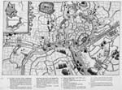
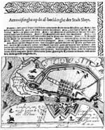
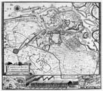
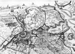
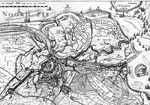
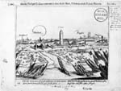
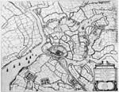

OOSTENDE VERLOREN, SLUIS GEWONNEN, 1604
Tentoonstelling in de Universiteitsbibliotheek van 12 augustus - 12
september 2004
Samenstelling: Dirk de Vries
Met bijdragen van Charles van den Heuvel, Anton van der Lem en Piet Lombaerde
Beeldkroniek 3
14 Orlers, 1610
SLUYS / [gegraveerd door Floris Balthasar]. - Leiden: Henrick van Haestens, 1610. - Ets en gravure; 20 x 32 cm.
Titel ontleend aan opschrift in de kaart. Niet gesigneerd, noch gedateerd. Zonder schaalaanduiding. Zuidzuidoost boven.
¶ Bij de Leidse drukker en uitgever Jan Jansz. Orlers (1570-1646) verscheen in 1610 de Nassausche Laurencrans, waarin de successen van het Staatse leger onder Maurits worden beschreven en met 39 prenten verbeeld. Het werk van Orlers beslaat een periode van twintig jaar vanaf 1588, het jaar van de ondergang van de Armada. Het boek heeft een lange voorgeschiedenis, die teruggaat tot het jaar 1599, toen het plan werd opgevat om tot een prentenreeks te komen van Maurits’ eerste tien glorieuze jaren. In een kleine kring van intimi van de prins werd het werk voorbereid, met Floris Balthasar als instigator. Hugo Grotius werd erbij betrokken om epigrammen bij de prenten te leveren, en met het voortgaan van de strijd nam het aantal prenten ook toe, waarvan er een aantal losbladig zijn verschenen. Het plaatwerk zelf is er nooit gekomen, tenminste niet in de oorspronkelijke opzet van prent en puntdicht. Floris Balthasar verkocht het materiaal in 1608 of 1609 aan de Leidse uitgevers Orlers en Haestens, die het werk in 1610 in een enigszins afgeleide vorm, maar mèt de prenten op de markt brachten. Na de oorspronkelijke Nederlandse uitgave en Franse (1612), Duitse (1612) en Engelse (1613) vertalingen verscheen er in 1619 een vermeerderde editie, die in 1624 werd herdrukt en die ook in het werk in twee delen Willem en Maurits van Nassau, haer leven en bedrijf (1651) is opgenomen. De prenten werden afzonderlijk geleverd en moesten worden ingevoegd volgens de aanwijzingen die op de laatste bladzijde zijn meegegeven.
Gezien de vele uitgaven, behoren de prenten van Orlers niet tot de zeldzaamheden en we komen ze dan ook in veel collecties tegen, meegebonden in het boek of losbladig, verdwaald uit de oorspronkelijke omgeving. Dat is ook het geval met de vogelvluchtkaart van het beleg van Sluis, waarvan de gravure volgens Eijffinger aan Floris Balthasar is toe te schrijven. De nummering (1-11) in de kaart wordt verklaard in een legenda in boekdruk die onder de gravure op hetzelfde blad is afgedrukt. Dat is overigens alleen in de eerste editie van 1610 het geval, in de latere uitgaven is de legenda in de tekst van het boek opgenomen. De gravure, waaraan inhoudelijk in de loop der jaren niets is toegevoegd, werd voor de uitgave van 1651 nog eens stevig opgewerkt.
De op de kaart weergegeven topografische ondergrond wijkt zoveel af van wat de hiervoor besproken kaarten, met name die van Horenbault en Giustiniano, te bieden hebben dat we van een oorspronkelijk werkstuk mogen spreken, waarvan ook de cartografie wellicht aan Floris Balthasar is toe te schrijven.
De kaart toont het krijgsgebeuren rondom het met forten en legers omgeven Sluis, van ARDENBORCH tot Terhofste en Ste Katelyne tot Ste Anne ter Muye tot en met de aanval op het legerkamp van Willem Lodewijk op 6 augustus. Een interessante toevoeging vormt het bijkaartje van het op 10 mei veroverde ISENDYCK, omdat de nieuwe fortificatie ten noordwesten van de vesting daarop voorkomt. De oorspronkelijke tekening van deze uitbreiding, waarvan het ontwerp waarschijnlijk aan Simon Stevin mag worden toegeschreven, is enige jaren geleden door Westra aan het licht gebracht.
In: J. J. Orlers, Den Nassauschen Laurencrans. Beschrijvinghe ende afbeeldinge van alle de victoriën. Leiden : Haestens, 1610 en volgende uitgaven.
Ref.: Muller 1211 a en b.
Lit.: Eijffinger (1978), i.h.b. p. 178; Zandvliet (1989); Westra (1993).
Loc.: GA Sluis, ongenummerd ; UB Leiden, CollBN P37 N73 (met legenda), CollBN P226 N25, in: 1402 A 14 (met legenda), in: 189 A 16, in: 1413 G 15, in: 1370 D 21, in: 1141 B 27, in: 451 A 23 ; AvS Rotterdam, S 1580/92 (met legenda), S 1580/93, in : 39 C 17 (Atlas Kittensteyn), fol. 511 (gekleurd); RPK Amsterdam, FM 1211a (met legenda), FM 1211b ; KB Brussel, 960 (met legenda).
|  | Orlers, 1610. |
15 Floris Balthasar II, ca. 1610
SLUIS / [gegraveerd door Floris Balthasar]. – [S.l.: s.n., ca.1610]. - Ets en gravure; 9 x 13 cm.
De titel is ontleend aan een opschrift in het kaartbeeld. Niet gesigneerd, noch gedateerd. Zonder schaalaanduiding. Zuidoost boven.
¶ Dit kaartje, dat als enige in deze reeks alleen de stad zonder directe omgeving toont, moet enige tijd na de inname door Maurits zijn uitgegeven, waarschijnlijk kort na de aanleg van een nieuw verdedigingswerk aan de overzijde van de haven, waarop het gegraveerde bijschrift rechtsonder betrekking heeft. Bovendien wordt in de toelichting in boekdruk gesproken over wederopbouw: doch de Heeren Staten hebben dese Stadt veel verbetert ende werdt noch alle daeghs meerder betimmert.
De herkomst van deze plattegrond met naast elkaar Franse en Nederlandse opschriften kon niet worden achterhaald. Wat de weergave van de stad en de strook direct buiten de wallen betreft vertoont ze een sterke afhankelijkheid van wat Orlers (nr. 14) daar laat zien, om welke reden ze hier direct op deze kaart volgt. Beide kaarten besteden aandacht aan de locatie waar de Spaanse soldaten tijdens het beleg gelegerd waren, namelijk op het terrein tussen het kasteel en Het Sluisse gat. In de gegraveerde opschriften meen ik hetzelfde handschrift te herkennen als op de kaart van Orlers, en ben daarom geneigd ook hieraan de naam van Floris Balthasar te verbinden.
Het kaartje is afgedrukt op één van de vier uitgeknipte en op één blad geplakte velletjes, waarvan een ander de legenda in boekdruk bij dit kaartje bevat met het opschrift Aenvvijsinghe op de afbeeldinge der Stadt Sluys, en de twee overige betrekking hebben op het stadje Middelburg in Vlaanderen. Het zou zeer goed kunnen, dat deze vier fragmenten ooit behoord hebben tot één enkel document, wellicht een enkelbladig pamflet. Een aanwijzing voor een mogelijke uitgever en/of drukker zouden de stroken drukkersornament kunnen zijn, die boven en rechts van de toelichting zijn afgedrukt. Hetzelfde ornament is ook gebruikt in de fondscatalogus van Cornelis Claesz. uit 1609.
Het blad is opgenomen in het zogenoemde ‘Album Kittensteyn’, gedateerd 1613 en berustend in de Atlas van Stolk, waarin Willem Luytszoon Kittensteyn in 1613 prenten heeft gebundeld die op de Nederlandse vrijheidsstrijd betrekking hebben.
Lit.: vgl. voor het drukkersornament ill. 1.28 in Schilder (2003) op p. 22.
Loc.: AvS Rotterdam, in: 39 C 17 (Atlas Kittensteyn), fol. 510 vo.
|  | Floris Baltasar II, ca. 1610 (foto Atlas van Stolk). |
16.1 Hondius / Visscher I, ca. 1615
CAERTE VAN SLVYS CADSANT en bijliggen(de) Polders. - Tot Amsterdam bij Iud. en Henri. Hondium, [ca. 1615]. - Ets en gravure; 38,5 x 43,5 cm.
Eerste staat. Titel met impressum linksonder in geornamenteerde omlijsting. Niet gedateerd. Schaalstok onder de titel: Scala van 2 Vlaemsche mijlen (= 9,7 cm). Noord boven. Met onderaan drie bijkaartjes in een 6 cm hoge strook: 1. Beleg van Sluys door den Printz va(n) Parma, 2. Afbeeldinge van de Stormbrugghe, ghemaect | bij sijn Pe. Excell. voor de Stadt va(n) Sluys, 3. Beleg van | Sluys door sijn P. Exc.
¶ De kaart van het oorlogsgebied in Vlaanderen die Jacques Horenbault in 1605 te Gent had vervaardigd, werd ongeveer tien jaar later door de broers Jodocus (1593-1629) en Henricus (1597-1651) Hondius te Amsterdam opnieuw in kopie op dezelfde schaal uitgegeven. Hun vader Jodocus Sr. (1563-1612), ook uit Gent afkomstig, was deze stad om geloofsredenen na de inname door Parma in 1584 ontvlucht en had zich na een kort verblijf in Londen te Amsterdam gevestigd.
De kaart toont dezelfde wijzigingen bij Sluis, Middelburg, Aardenburg en IJzendijke die in de tweede staat van het voorbeeld zijn aangebracht. Evenals Horenbault leggen ook de gebroeders Hondius in de titel het accent op Sluis en versterken dat nog eens door drie bijkaartjes eraan toe te voegen, van de belegeringen van 1587 en 1604 en van de stormbrug van Maurits. Een kleine wijziging bij het fort St. Joris aan de monding van het Zwin wijst op een nog vroegere, vooralsnog niet teruggevonden, staat. De belangrijkste inhoudelijke verandering ten opzichte van het voorbeeld is dat er ten oosten van Sluis tussen St. Kruis en IJzendijke meer polders onder water zijn gezet.
De koperplaat met deze ets was een lang leven beschoren. Na Hondius kwam de plaat in bezit van Claes Jansz. Visscher (1587-1652), graveur van en handelaar in kaarten en prenten, die de inhoud ervan zo sterk wijzigde dat van de oorspronkelijke kaart van Hondius weinig overbleef. Visscher gebruikte deze kaart om ontwikkelingen op het strijdtoneel in beeld te brengen die ver na het beleg van 1604 plaatsvonden.
Ref.: Lantsheer en Nagtglas (1880), pp. 450, 451; Hollstein vol. XXXVIII, nr. 245-I.
Loc.: GA Sluis, ongenummerd; UB Leiden, CollBN P37 N49; British Library, Map Library C.9.d.1 (68).
|  | Hondius / Visscher I, ca. 1605. |
16.2 Hondius / Visscher II, 1622
Caerte van T’VRYE synde een Gedeelte en Lidt van VLAENDEREN Waer in vertoont wert de tegenwoordige ghelegentheijt van de Stadt Sluys Cadsand ende doorgesteken Polders met grooten Vlijt gecorrigeert en Verbetert door C.I. Visscher. – [Amsterdam] : CJVisscher et H. Hondius excud., [ca. 1625]. - Ets en kopergravure; 38 x 42 cm.
Tweede staat. Titel rechtsonder in cartouche, impressum boven de bijkaart. Schaalstok: Scala van twee Vlaemsche Mijlen (= 10 cm.). Noord boven, windroos.
Bijkaart linksonder van Sluis en omgeving (12 x 25,5 cm) met legenda (1-12), No. 8, 9, 10 sijn drij geslechte Schansen. Notitie linksboven: Alle Schansen en Redouten daer een Cruys by staet behooren onder | de Hertogin, de andere alle behooren de H.M. Heeren Staten | 1. Een Redout dat wert nu wederom gemaeckt tot een sterck Fort | 2. Langs dese plaets mee(n)de ‘S hertoginne(n) volck bij nacht in Cadsand te vallen den 18en Sept. 1621 | 3. Dit Oostborgh wert nu sterck gefortificeert | 4. Een vierbaken om in tijt va(n) noot te gebruijken | 5. Een nieu Fort aen de Duijnen geleijt | 6. t’Fort ter Hofstede | 7. Een nieuw gemaeckte wech deur t’ verdro(n)cken landt. De nummers 5, 6 en 7 treffen we aan ter hoogte van Retranchement, waarmee een begin gemaakt werd met de aanleg van de vesting van die naam. Op de keerzijde tekst in boekdruk met het opschrift FLANDRIAE | PARS ORIENTALIOR, paginanummers 43 en 44 en katernsignatuur Q.
¶ De inhoud is ten opzichte van de eerste staat geheel gewijzigd. Na het verstrijken van het Bestand werd het al snel duidelijk dat men van Spaanse zijde zich niet zonder meer bij het verlies van Sluis zou neerleggen. Nadat een aanval op Sluis en het eiland Cadzand in 1621 was mislukt, werd met het aanleggen van Des vyants nieuwe vaert in 1622 tussen de forten Frederik en Isabella een poging ondernomen om buiten het bereik van de Staatse forten een toegang naar zee via het Zwin te creëren. De uitgevers Visscher en Hondius stelden het geïnteresseerde publiek door middel van deze kaart van de nieuwe ontwikkelingen op de hoogte. Bij de nummers 8 t/m 16 gaven ze aan dat een groot aantal forten waren gedemolieerd die bij het beleg in 1604 dienst hadden gedaan. De belangrijkste wijziging is aangebracht aan de onderkant, waar de strook met drie bijkaarten werd vervangen deels door een nieuwe bijkaart en deels door de uitbreiding van de hoofdkaart. Deze tweede staat komt alleen voor als blad uit een atlas, met Latijnse gedrukte tekst op de keerzijde. De atlas, waarin ze slechts één keer is uitgegeven, is de tweede Latijnse uitgave van de atlas van de Nederlanden van Pieter van den Keere.
In: P. van den Keere, Germania Inferior. Amsterdam 1622.
Ref.: Lantsheer en Nagtglas, p. 450; Unger nr. 673; Koeman, Atlantes neerlandici vol. II, Kee 2; Campbell (1968), nr. 32; Hollstein vol. XXXVIII, nr. 245-II.
Lit.: in Bossu (1982) afgebeeld op p. 29.
Loc.: ZA Middelburg, Zel. Ill. nr. 673 en 1585 (zoek!); UB Leiden, in: CollBN Atlas 18, kaart 10; KB Brussel, in: Atlas IV, kaart nr. IV 9922.
|  | Hondius / Visscher II, 1622 (detail). |
16.3 Hondius / Visscher III, ca. 1630
Caerte van T’VRYE synde een Gedeelte en Lidt van VLAENDEREN […]
Derde staat. Titel en impressum zijn ongewijzigd, ook inhoudelijk zijn er geen veranderingen aangebracht. Genummerd rechtsonder: 9. Geen tekst op de keerzijde.
De toegevoegde nummering verwijst naar de plaats die de kaart, in deze derde staat, inneemt in de atlas van de Nederlanden van Claes Jansz. Visscher.
In: C.J. Visscher, Belgium sive Germania Inferior. Amsterdam, 1634.
Ref.: Lantsheer en Nagtglas, p. 450; Unger nr. 674; Koeman, Atlantes neerlandici, vol. III, Vis 1A; niet in Hollstein vol. XXXVIII, nr. 245.
Loc.: ZA Middelburg, Zel. Ill. nr. 674; UB Leiden, CollBN P37 N51; RPK Amsterdam, in: Atlas Ottens port. 16-3; KB Brussel III 8790; British Museum, Map Library, in: atlas Visscher, kaart nr. 23.
16.4 Hondius / Visscher IV, 1633
Caerte van T’Vrye Synde een gedeelte van VLAENDREN van nieus gecorigeert en met vlijt gebetert door Claes Jansz. Visscher Ao. 1633. – [Amsterdam] : CJVisscher Excudebat, Ao. 1633 - Ets en gravure; 38 x 42 cm.
Vierde staat. Gewijzigde titel linksboven in cartouche met kwabornament. Schaalstok: twee Vlaemsche Mijlen van 15 in een Graedt (= 9,7 cm). Noord boven. Impressum linksonder.
¶ De bijkaart van de tweede staat is nu verdwenen, en de ruimte ervan wordt ingenomen door de uitbreiding van de hoofdkaart. Het geïnundeerd gebied is verkleind. De kampementen aan weerszijden van het Zwin, evenals de fortificatie van Oostburg, waarmee op de tweede staat een begin was gemaakt, zijn weggehaald. Nieuwe gegevens zijn de omwalling van Retranchement en een groter aantal schepen in de Schelde. Hoewel de uitvoerige legenda van de vorige staat niet meer hierop voorkomt, zijn de nummers waarna deze verwees, in de kaart blijven staan. Waarom bij Ramscappelle, Duldsele en Coolkercke drie keer het cijfer ‘4’ is aangebracht, is niet duidelijk. Het cijfer ‘9’ rechtsonder is nog gedeeltelijk zichtbaar.
C.J. Visscher heeft deze opnieuw gewijzigde staat in een ander exemplaar van zijn atlas van de Nederlanden opgenomen.
In: C.J. Visscher, Belgium sive Germania Inferior. Amsterdam, 1634.
Ref.: Koeman, Atlantes neerlandici, vol. III, Vis 1A; Hollstein vol. XXXVIII, nr. 245-III.
Loc.: UB Leiden, CollBN P37 N52; British Museum, Map Library, in: atlas Visscher, kaart nr. 22.
|  | Hondius / Visscher IV, 1633 (detail). |
16.5 Hondius / Visscher V, kort vóór 1640
Caerte van T’Vrye Synde een gedeelte van VLAENDREN van nieus gecorigeert […]
Vijfde staat. Titel en impressum zijn ongewijzigd gebleven.
¶ Opnieuw zijn veranderingen op het strijdtoneel te zien, op basis waarvan deze uitgave kort vóór 1640 mag worden gedateerd, hoewel het jaar 1633 in titel en impressum is blijven staan. Oostburg heeft nu definitief een nieuwe omwalling gekregen. Rechts van het midden zijn er wijzigingen ten opzichte van de derde staat bij Fort Patientie, Fort Philippijn, Boekhoute, Cruijsdijck doorgesneden, t Sas van Gent. Meer forten zijn voorzien van de vlaggen van beide partijen, zo heeft Sas van Gent nog een Spaanse vlag, de forten Patientie, Philippijn en Boekhoute daarentegen Nederlandse. Nog steeds is nummer 9 rechtsonder vaag zichtbaar.
Ref.: Hollstein vol. XXXVIII, nr. 245-IV.
Lit.: in Bossu (1982) afgebeeld op pp. 78 en 79.
Loc.: UB Leiden, CollBN 009-15-010.
16.6 Hondius / Visscher VI, 1640
Caerte van T’Vrye Synde een gedeelte van VLAENDREN van nieus gecorigeert […]
Zesde staat.
Behalve het jaar van uitgave, 1640 zijn er opnieuw geen veranderingen in titel en impressum te constateren. Ook inhoudelijk zijn geen veranderingen aangebracht.
Ref.: Hollstein vol. XXXVIII, nr. 245-V.
Loc.: UB Leiden, CollBN 009-13-022.
16.7 Hondius / Visscher VII, 1640
Caerte van T’Vrye Synde een gedeelte van VLAENDREN van nieus gecorigeert […]
Zevende staat.
Het jaar 1640 is nu ook in het impressum linksonder aangebracht. Inhoudelijk is er niets gewijzigd of toegevoegd.
Ref.: Hollstein vol. XXXVIII, nr. 245-VI.
Loc.: Ősterreichische Nationalbibliothek, Wenen.
16.8 Hondius / Visscher VII, 1645
Caerte van T’Vrye Synde een gedeelte van VLAENDREN van nieus gecorigeert […]
Achtste en laatste bekende staat.
Het nieuw jaartal verschijnt in de titel r.b.: [...] door | Claes Janss. Visscher | Ao. 1645; in het impressum l.o. daarentegen ongewijzigd: CJVisscher Excudebat | Ao. 1640.
Ref.: Niet in Hollstein vol. XXXVIII, nr. 245
Loc.: RA Gent: Kaarten en plans nr. 572.
17 Baudart, 1615
Sluis. – [Amsterdam: Michiel Colijn, 1615]. - Ets en gravure; 12,5 x 16 cm.
Titel ontleend aan opschrift midden boven in de afbeelding. Niet gesigneerd, noch gedateerd. Oost boven.
¶ Naast de prentenverzamelingen van Hogenberg en Orlers is er nog een derde die de periode van de Tachtigjarige Oorlog vóór het Bestand in beeld brengt. De in Deinze geboren Willem Baudart (1565-1640), protestants theoloog en geleerd schrijver, bracht een verzameling van 285 prenten, kaarten en portretten bijeen, waarvan er 221 verkleinde kopieën van Hogenbergplaten zijn. De overige vierenzestig zijn speciaal voor dit werk vervaardigd, zo ook dit prentje van Sluis. De Nassausche Oorloghen. Afbeeldinghe, ende beschrijvinghe van alle de veldslagen, belegeringhen […], in 1615 voor het eerst bij Michiel Colijn te Amsterdam verschenen, gaat verder in de tijd terug dan Orlers, namelijk tot 1559. Na een Franse vertaling uit 1616 verscheen bij dezelfde uitgever in 1621 ook een Latijnse van deze verkleinde Hogenberg onder de titel Polemographia Avraico-Belgica.Viva delineatio ac descriptio omnium proeliorum. Het prentje waarop het beleg van Sluis van 1604 is verbeeld, draagt linksonder het in de plaat gegraveerde nummer 260. De beste afdrukken vindt men in de eerste uitgave, en alle prentjes zijn aan de achterzijde bedrukt. Aan de hand van de paginanummering rechtsboven en het katernsignatuur rechtsonder is vast te stellen uit welke editie een losbladig exemplaar afkomstig is: Fol. 187 (N.B. foutieve paginering, moet zijn 787) en Ggggg wijzen op de Nederlandse uit 1615, Fol. 291 en Oo2 op de Latijnse uit 1621.
Deze blik in vogelvlucht op het West-Vlaamse land vanuit het noordwesten houdt het midden tussen een profiel en een schuine perspectivische afbeelding, waarbij echter niet een centraal projectiepunt is ingenomen, maar een parallelprojectie is toegepast, zoals we dat in oude stadsplattegronden vaker tegenkomen. In de weergave van het landschap verkeert men met deze prent in het grensgebied van de cartografie: enerzijds is de standplaats van de tekenaar te laag gekozen, anderzijds is er wel degelijk sprake van een zekere mate van generalisatie en exacte benadering. De stevig omwalde stad met het kasteel, waarop vlaggen met het andreaskruis van het Spaanse leger zijn aangebracht, en daaromheen de forten, linies en legerplaats van het Staatse leger met de driekleur, zijn verhoudingsgewijs extra groot weergegeven, dit alles tegen een horizon waarop de omliggende plaatsen met hun namen zijn geplaatst: Middelburch, Ardenburch, Brugghen, Damme. Onder de prent is een Latijns kwatrijn, een zogenoemd elegisch distichon, in gravure afgedrukt waarin ‘de dappere hand van Maurits’ wordt geroemd ‘die in één zomer op gelukkige wijze Vlaamse forten en steden heeft veroverd’.
In: W. Baudart, De Nassausche Oorloghen. Afbeeldinghe, ende beschrijvinghe van alle de veldslagen, belegeringhen […]. Amsterdam : M. Colijn, 1615 en latere Franse (1616) en Latijnse (1621) uitgaven.
Ref. : Muller 1212; Van Stolk 267 (nr. 260).
Lit.: Muller dl. 1 (1863), pp. 41-43; Eijffinger (1978).
Loc.: GA Sluis, ongenummerd ; UB Leiden, CollBN P37 N76 (fol. 187, Ggggg), in : 1365 H 15 (ed. 1615), in : 392 B 19 (ed. 1621) ; RPK Amsterdam, FM 1212 ; AvS Rotterdam, nr. 267 (fol. 291, Oo2).
|  | Baudart, 1615. |
18 Joan Blaeu, 1649
SLVSA EXPVGNATA virtute Ill.mi Princ. MAVRITII NASSAVII ARMIS Potentiss. D.D. ORDINVM BELGICAE FOEDERATAE. Anno MDCIIII. - [Amsterdam: J. Blaeu, 1649]. -
Ets en gravure ; 37,5 x 49,5 cm.
Titel rechtsonder in geornamenteerd paneeltje met niet ingevuld schild. Niet gesigneerd, noch gedateerd. Schaalstok boven de titel: [300] Virgae Rhynlandicae (= 6,4 cm). Oostzuidoost boven.
¶ Tegen het einde van de vrijheidsstrijd van de Republiek vatte Joan Blaeu (1598-1673), de ‘Typographorum princeps’, het plan op een nieuw stedenboek van de Nederlanden samen te stellen, niet alleen omdat de politieke toestand daarom vroeg, ook hadden de steden, met name in de Noordelijke Nederlanden, een ingrijpende ontwikkeling ondergaan. Het werd de hoogste tijd dat Guicciardini’s Beschrijving van de Nederlanden, de gids bij uitstek voor stedelijk Nederland sinds de eerste Italiaanse uitgave van 1567, een geheel gereviseerde opvolger kreeg. Blaeu had wat de uitgave van stedenboeken en landbeschrijvingen betreft ondertussen ervaring opgedaan met Sanderus’ Flandria illustrata (1644), dat hij van de firma Hondius had overgenomen, en met de beschrijving van Nederlands Brazilië door Barlaeus (1647). In zijn nieuwe tweedelige atlas zouden, evenals in het werk van Guicciardini, de beide Nederlanden worden opgenomen, want ‘de scheiding van Noord en Zuid werd noch als onherroepelijk noch als smartelijk gevoeld’.
De ontwikkelingen op het politieke vlak maakten dat de afronding van de uitgave niet zonder problemen verliep. Terwijl aan de ene kant haast geboden was, omdat de vrede eraan zat te komen, was het anderzijds nog niet duidelijk waar de grenzen tussen Noord en Zuid zouden komen te liggen. Dat is de reden waarom Sluis, met de andere steden in de latere Generaliteitslanden, in de eerste Latijnse editie is opgenomen in het deel van de ‘Koninklijke’ Nederlanden, het Novum ac magnum theatrum urbium Belgicae Regiae. Behalve plattegronden treffen we daarin ook de kaarten van de roemrijke belegeringen uit de Tachtigjarige Oorlog aan. Na het sluiten van de vrede zijn de steden in de Generaliteitslanden in de twee volgende Latijnse edities en de twee Nederlandse, verhuisd naar het noordelijk deel, het Toonneel der steden van de Vereenighde Nederlanden. In de inhoudsopgave van dat deel volgen ze na Groningen als ‘Steden onder ‘t gebiedt van de H.m H. Staten Generael der Vereenighde Nederlanden gelegen buyten en op de grensen der selve Landschappen. Mitsgaders verscheyde belegeringen en fortressen daer toe behoorende’. Het staatkundig lot van Sluis in Vlaanderen is daarmee ook in de stedenatlas van Blaeu gecodificeerd: verbonden met de Noordelijke Nederlanden, Belgica Libera.
Sterke gelijkenis in tekenstijl en in de weergave van de topografie met de kaart die 38 jaar eerder in het werk van Orlers is opgenomen (nr. 15) doet een relatie voorbeeld / kopie vermoeden. Toch is hier enige voorzichtigheid geboden. Behalve dat de oriëntatie 45º is gedraaid en Blaeu een kleiner gebied op een groter schaal laat zien, valt bij nadere beschouwing op dat de cartografie vooral in de details verschillen vertoont. Bovendien strekt Blaeu’s kaart zich links (met Casant) en rechts (met Le Camp de l’Archid Albert) iets verder uit dan die van Floris Balthasar in het werk van Orlers en laat hij veel van de stoffage van oprukkende legertjes weg. Een en ander maakt het zeer aannemelijk dat voor beide kaarten dezelfde basiskaart is gebruikt, die echter in de handen van verschillende graveurs en uitgevers iets anders is overgenomen en geïnterpreteerd.
In: J. Blaeu, Novum et magnum theatrum urbium Belgiae. 2 dln. Amsterdam 1649. Latere uitgaven: 1649 (Latijn), 1649 en 1651 (Nederlands).
Ref.: Koeman, Atlantes Neerlandici, vol. I: Bl. 63, 64, 66, 68A, 68B en 70.
Lit.: Van ‘t Hoff (1966); Fontaine Verwey (1979), pp. 169-171.
Loc.: GA Sluis, 2 exx. ongenummerd (verso Latijn); UB Leiden, CollBN P37 N78 (verso Latijn), P37 N79 (verso Nederlands); RPK Amsterdam, FM 1212 Ba (gekleurd, verso Nederlands), FM 1212 Bb (verso Latijn), FM 1212 Bc (verso Latijn)
|  | Joan Blaeu, 1649. |
Deze bijdrage is een hier en daar aangepaste versie van het artikel ‘Roem en ellende: cartografische beeldkroniek van de strijd om Sluis in 1604’, dat in de herdenkingsbundel Niemandsland in staatsverband. West-Zeeuwsch-Vlaanderen ten tijde van de Republiek en daarna als nummer 32 van de Bijdragen van de Heemkundige Kring van West-Zeeuws-Vlaanderen in september 2004 zal verschijnen.
| vorige pagina | volgende pagina |